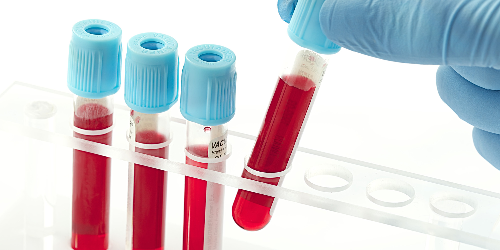

Blood is a transport system for the body. We carry all kinds of things in the approximately 5 litres of blood that circulates constantly through our system.Blood analysis is laboratory examination of a sample of blood used to obtain information about its physical and chemical properties. Blood analysis is commonly carried out on a sample of blood drawn from the vein of the arm, the finger, or the earlobe; in some cases, the blood cells of the bone marrow may also be examined. Hundreds of hematological tests and procedures have been developed, and many can be carried out simultaneously on one sample of blood with such instruments as autoanalyzers.
A complete blood count (CBC) is a measure of the hematologic parameters of the blood. Included in the CBC is the calculation of the number of red blood cells (red blood cell count) or white blood cells (white blood cell count) in a cubic millimetre (mm3) of blood, a differential white blood cell count, a hemoglobin assay, a hematocrit, calculations of red cell volume, and a platelet count. The differential white blood cell count includes measurements of the different types of white blood cells that constitute the total white blood cell count: the band neutrophils, segmented neutrophils, lymphocytes, monocytes, eosinophils, and basophils. A specific infection can be suspected on the basis of the type of leukocyte that has an abnormal value. Viral infections usually affect the lymphocyte count, whereas bacterial infections increase the percentage of band neutrophils. Eosinophils are increased in patients with allergic conditions and some parasitic infections. The immune system of a healthy individual responds to infection by increasing the number of white blood cells; however, the immune system infected with HIV, which damages the body’s ability to fight infection, is unable to mount a defense of white blood cells (namely, lymphocytes) and cannot defend the body against viral, bacterial, or parasitic assault.
The main components of blood are:
Abnormalities in any of these components or in related cells or tissues can cause a blood disorder. The disorder and its symptoms depend on precisely what’s gone wrong. Some blood disorders—including leukemia, lymphoma, myeloma, myelodysplastic syndrome, and myeloproliferative neoplasms—cause unusually low or high levels of blood cells. In some cases the blood cells don’t form or mature as they should and cannot carry out their normal functions. A low level of RBCs is called anemia. A high level is called polycythemia. A low level of WBCs is called leukopenia. A high level is called leukocytosis. A low level of platelets is called thrombocytopenia. A high level is called thrombocytosis. Other blood disorders have to do with a deficiency of substances the body needs, such as clotting factors in hemophilia, or with the presence of unwanted substances in the blood, such as abnormal proteins in amyloidosis. There are many other specific types of blood disorders.